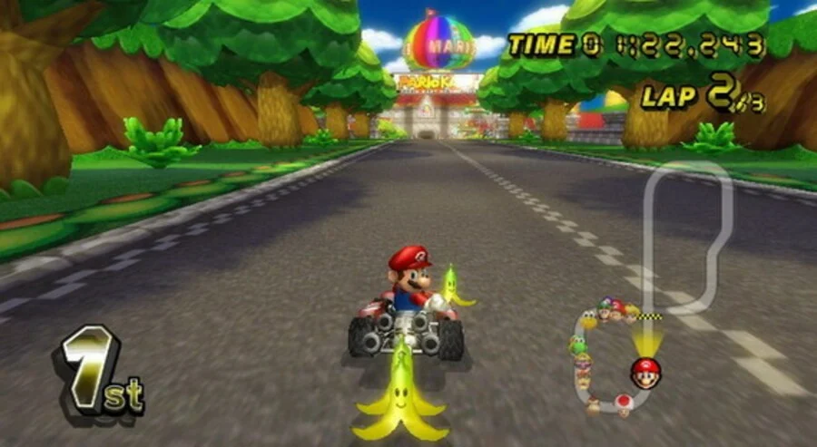
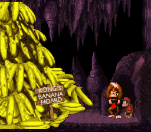
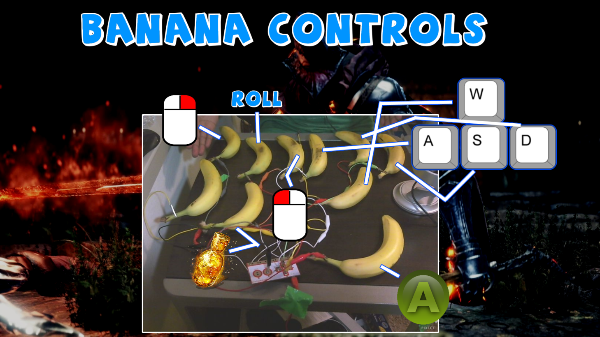
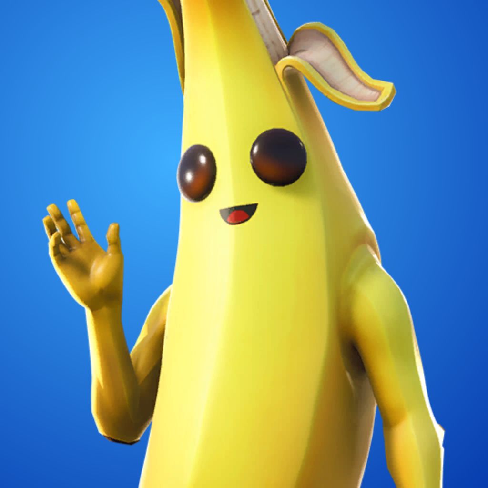

Analyse : L'étrange amour du jeu vidéo pour les bananes
Honnêtement c'est parmi les recherches les plus stupides que j'ai jamais pu faire

La plus iconique des bananes
Le cube roule, roule, et…. une banane ? Bah, ça fera l’affaire ! Si vous avez déjà touché ne serait-ce qu’une fois à mario kart dans votre vie, vous êtes sans aucun doute familier avec la banane, un peu trop même. Déjà présente dans le tout premier opus, la banane de mario kart est un item réservé aux meilleurs joueurs, ceux à la tête du peloton. C’est en effet un item de base faible, censé équilibrer les forces entre les premiers et retardataires. Pourtant entre de bonnes mains, c’est un item d’une puissance sans nom. Son fonctionnement est simple : un possesseur de banane peut en faire 3 choses : la garder derrière soi pour bloquer une attaque ou sonner un adversaire trop collant, la laisser traîner sur le sol quitte à cause de quelques accidents ou la lancer devant soi tel un sniper pour toucher un ennemi. La banane est donc un item assez versatile, qui peut offrir de nombreux avantages en fonction de la situation. Elle est cependant à usage unique, et nécessite prudence et stratégie dans son utilisation !
Les bananes en temps que pièces et collectible
Les collectibles sont au centre de nombreuses expériences vidéoludiques. En effet, quoi de mieux pour faire grimper un score ou représenter un objectif un peu abstrait que l’accumulation d'objets identiques ? C’est une mécanique qui a l’avantage d’être extrêmement simple à repérer et comprendre, commun à des milliers de jeux. Ainsi les collectibles peuvent servir aussi à expliquer au joueur comment passer un obstacle, le récompenser, créer du challenge.On retrouve le plus souvent les pièces, les pierres précieuses, parfois de simple “point” comme avec pacman. Et pas loin derrière ceux-ci, la banane.
Evidemment impossible de parler de bananes sans parler des jeux donkey kong country. Là où mario récolte des pièces, donkey kong récolte les bananes, si mario sauve la princesse peach, donkey kong sauve les bananes.


Bananes et hardware
La banane n’a pas fait son cheminuniquement dans les jeux, mais aussi dans les accessoires ! Non je parle pas de console au design insolite, mais de ces joueurs qui finissent chaque darksouls et autres jeux réputés pour leur difficulté avec pour manette… une banane. Un peu de bricolage peut faire des merveilles.
Une blague avant tout
Le cas de Banane de fornite est assez intéressant : au départ un simple skin, les joueurs se sont si vite attachés à lui que ses papa chez Epic Games l'ont transformé en vrai mascotte du jeu. Il est désormai présent dans chaque trailer dans le rôle du personnage rigolo et bête. Depuis quelques temps, il a même le droit à tout un lore et est devenu élement central de l'intrigue de fornite.et il possède aussi des pouvoirs divinatoires
De l'autre coté chez les jeux indépendants, on pourra citer la banane de Deltarune chapitre 2. Chef d'oeuvre en cours de Toby fox, créateur d'undertale, son génie s'est denouveau révélé dans l'écriture d'une des plus grande séquence du jeu vidéo. Le joueur au commande d'une voiture doit guider la reine du cyberspace jusqu'à son palace. Mais tout bascule lorsque une banane apparait sur la route. La reine, friant de banane, ordonne au joueur de l'attraper. Ce n'est pas un choix, c'est un ordre, et les conséquences d'un refus ne sont pas imaginables. le joueur s'execute, attrape la banane et la Reine de son language d'aristocrate technocrate s'exprime en ces mots :
potassium.
